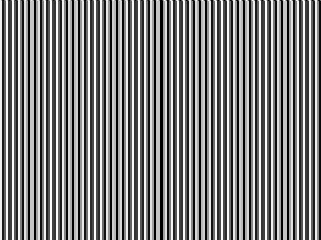
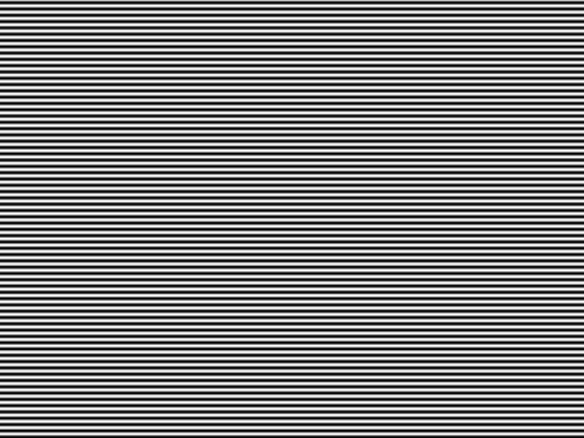
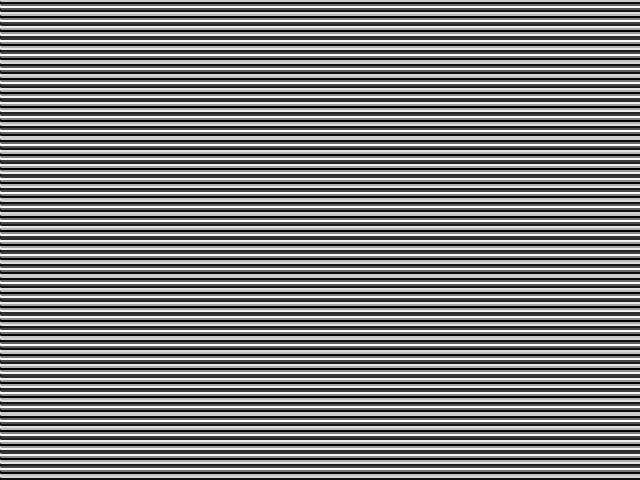
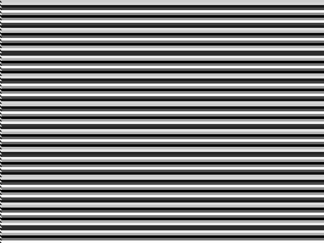
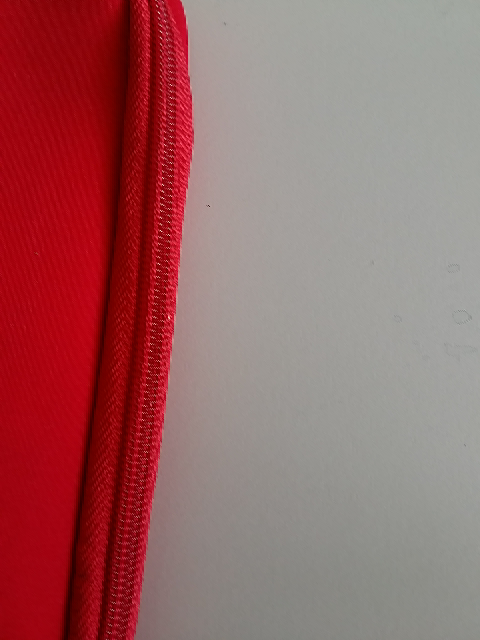
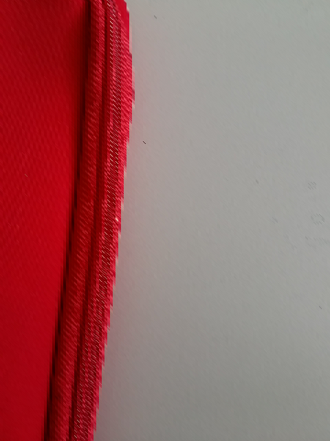
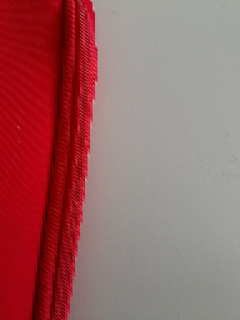

Flächenbild um 1 Bit reduziert:

Flächenbild um 2 Bit reduziert:

Flächenbild um 3 Bit reduziert:

Flächenbild um 4 Bit reduziert:

Flächenbild um 5 Bit reduziert:


Informationen im Header:
fileSize: Größe der Datei
bitsPerPixel: gespeichterte Bits pro Pixel
Breite: Anzahl der Pixel in horizontaler Ausrichtung
Höhe: Anzahl der Pixel in vertikaler Ausrichtung
Berechnung der Filegröße:
Breite * Höhe * bitsPerPixel + Headergröße
Die Periodendauer von grating_H3 ist geschätzt 14 Pixel lang, von grating_V3 8 Pixel lang.
| Periode von grating_H3: | Periode von grating_V3: | 239 196 136 75 26 1 8 43 99 161 216 248 251 224 |
205 96 11 16 107 214 253 195 |
|---|
Das Abtasttheorem besagt, ähnlich wie bei audiosignalen, dass bei einer maximalen Frequenz fMax = 1/TMax die Abtastfrequenz fabtast = 1/Tabtast mehr als zwei Mal der fMax sein muss, um das Signal genau zu beschreiben. Der Grenzfall ist dabei fabtast = 2*fMax, da bei falschen Abtastpunkten das Signal immer schwarz überträgt und jeder Pixel damit schwarz dargestellt wird.
brightness = Math.sqrt{0.299*Math.pow(r,2) + 0.587*Math.pow(g,2) + 0.114*(Math.pow(b,2))}
Die drei Koeffizienten 0.299, 0.587 und 0.114 gewichten die drei Farbkomponenten hinsichtlich der menschlichen Helligkeitswahrnehmung. Denn bei gleichem Farbwert wird Blau vom Menschen dunkler wahrgenommen als Rot und Rot dunkler als Grün. Die Summe der drei Koeffizienten ergibt 1, entsprechend hat die Funktion den gleichen Wertebereich wie die drei Farbkomponenten.

Das Aliasing entsteht durch eine Bewegung, die schneller ist als die aufnehmbaren Bilder pro Sekunde des Aufnahmegeräts. Dadurch entsteht die Illusion, dass das Objekt sich gar nicht oder Rückwärts bewegt.
Abtastung von 1 Pixel:
Abtastung von 2 Pixeln:
Abtastung von 3 Pixeln:
Abtastung von 4 Pixeln:
Abtastung von 5 Pixeln:
Abtastung von 1 Pixel:
Abtastung von 2 Pixeln:
Abtastung von 3 Pixeln:
Abtastung von 4 Pixeln:

Abtastung von 5 Pixeln:
Abtastung von 1 Pixel:

Abtastung von 2 Pixeln:
Abtastung von 3 Pixeln:
Abtastung von 4 Pixeln:
Abtastung von 5 Pixeln:
Abtastung von 1 Pixel:

Abtastung von 2 Pixeln:

Abtastung von 3 Pixeln:

Abtastung von 4 Pixeln:

Abtastung von 5 Pixeln:

Detailbild um 2 Bit reduziert:
Detailbild um 3 Bit reduziert:
Detailbild um 4 Bit reduziert:
Detailbild um 5 Bit reduziert:
Flächenbild um 1 Bit reduziert:
Flächenbild um 2 Bit reduziert:
Flächenbild um 3 Bit reduziert:
Flächenbild um 4 Bit reduziert:
Flächenbild um 5 Bit reduziert:
Eine merkliche Verschlechterung tritt bei der Reduktion von 4 Bit auf.
Differenz-Detailbild um 1 Bit reduziert:
Differenz-Detailbild um 2 Bit reduziert:
Differenz-Detailbild um 3 Bit reduziert:
Differenz-Detailbild um 4 Bit reduziert:
Differenz-Detailbild um 5 Bit reduziert:
Differenz-Flächenbild um 1 Bit reduziert:

Differenz-Flächenbild um 2 Bit reduziert:

Differenz-Flächenbild um 3 Bit reduziert:

Differenz-Flächenbild um 4 Bit reduziert:

Differenz-Flächenbild um 5 Bit reduziert: